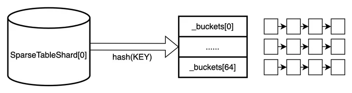
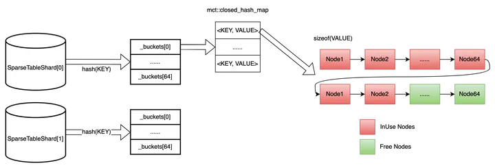

C++ 資料結構設計：如何高效地儲存並操作超大規模的 <KEY, VALUE>
在搜、廣、推場景中，Embedding 層有海量的稀疏參數（以 <key, value> 的形式儲存在參數伺服器上），規模可達千億等級。其中，key 的類型是 uint64_t，value 的類型是 float 類型的陣列，而且這個陣列的長度對於不同的模型是可變的。那麼，如何設計這樣一個儲存結構並能實現最高效地增、刪、改、查呢？
方案 1：
純 map 實現，log(n) 的複雜度
- 優點：實現簡單，直接呼叫 stl 庫或者第三方 hash_map 即可
- 缺點：大量的記憶體申請、釋放操作，而且會產生大量的記憶體碎片，開銷非常大
方案2：
標準的 hash 表，分桶（bucket），每個桶裡使用鏈表
優點：實現相對簡單
缺點：查詢的時候，定位到具體的桶 id 之後，還需要遍歷鏈表

方案3：
和方案2基本差不多，區別是桶裡的鏈表用 map 實現
優點：查詢的速度比方案 2 快
缺點：記憶體分配和釋放及記憶體碎片的問題還是沒得到解決
終極方案：
在方案 3 的基礎上，加上動態記憶體技術（見下圖）。簡單來說，就是每次申請固定個數（比如 64）的節點記憶體（鏈表形式），每個節點的記憶體大小是 sizeof(VALUE)，分別用兩個指針表示空閒鏈表（綠色部分，表示可用）和佔用鏈表（紅色部分，已使用）
優點：增、刪、改、查速度都得到大大提升

實現（參見 Paddle 開放原始碼）：
1. 記憶體分配器
template <class T>
class ChunkAllocator {
public:
explicit ChunkAllocator(size_t chunk_size = 64) {
CHECK(sizeof(Node) == std::max(sizeof(void*), sizeof(T)));
_chunk_size = chunk_size;
_chunks = NULL;
_free_nodes = NULL;
_counter = 0;
}
ChunkAllocator(const ChunkAllocator&) = delete;
~ChunkAllocator() {
while (_chunks != NULL) {
Chunk* x = _chunks;
_chunks = _chunks->next;
free(x);
}
}
template <class... ARGS>
T* acquire(ARGS&&... args) {
if (_free_nodes == NULL) {
create_new_chunk();
}
T* x = (T*)(void*)_free_nodes; // NOLINT
_free_nodes = _free_nodes->next;
new (x) T(std::forward<ARGS>(args)...);
_counter++;
return x;
}
void release(T* x) {
x->~T();
Node* node = (Node*)(void*)x; // NOLINT
node->next = _free_nodes;
_free_nodes = node;
_counter--;
}
size_t size() const { return _counter; }
private:
struct alignas(T) Node {
union {
Node* next;
char data[sizeof(T)];
};
};
struct Chunk {
Chunk* next;
Node nodes[];
};
size_t _chunk_size; // how many elements in one chunk
Chunk* _chunks; // a list
Node* _free_nodes; // a list
size_t _counter; // how many elements are acquired
void create_new_chunk() {
Chunk* chunk;
posix_memalign(reinterpret_cast<void**>(&chunk),
std::max<size_t>(sizeof(void*), alignof(Chunk)),
sizeof(Chunk) + sizeof(Node) * _chunk_size);
chunk->next = _chunks;
_chunks = chunk;
for (size_t i = 0; i < _chunk_size; i++) {
Node* node = &chunk->nodes[i];
node->next = _free_nodes;
_free_nodes = node;
}
}
};
2. SparseTableShard
#include <mct/hash-map.hpp>
template <class KEY, class VALUE>
struct alignas(64) SparseTableShard {
public:
typedef typename mct::closed_hash_map<KEY, mct::Pointer, std::hash<KEY>>
map_type;
struct iterator {
typename map_type::iterator it;
size_t bucket;
map_type* buckets;
friend bool operator==(const iterator& a, const iterator& b) {
return a.it == b.it;
}
friend bool operator!=(const iterator& a, const iterator& b) {
return a.it != b.it;
}
const KEY& key() const { return it->first; }
VALUE& value() const { return *(VALUE*)(void*)it->second; } // NOLINT
VALUE* value_ptr() const {
return (VALUE*)(void*)it->second;
} // NOLINT
iterator& operator++() {
++it;
while (it == buckets[bucket].end() &&
bucket + 1 < CTR_SPARSE_SHARD_BUCKET_NUM) {
it = buckets[++bucket].begin();
}
return *this;
}
iterator operator++(int) {
iterator ret = *this;
++*this;
return ret;
}
};
struct local_iterator {
typename map_type::iterator it;
friend bool operator==(const local_iterator& a,
const local_iterator& b) {
return a.it == b.it;
}
friend bool operator!=(const local_iterator& a,
const local_iterator& b) {
return a.it != b.it;
}
const KEY& key() const { return it->first; }
VALUE& value() const { return *(VALUE*)(void*)it->second; } // NOLINT
local_iterator& operator++() {
++it;
return *this;
}
local_iterator operator++(int) { return {it++}; }
};
~SparseTableShard() { clear(); }
bool empty() { return _alloc.size() == 0; }
size_t size() { return _alloc.size(); }
void set_max_load_factor(float x) {
for (size_t bucket = 0; bucket < CTR_SPARSE_SHARD_BUCKET_NUM;
bucket++) {
_buckets[bucket].max_load_factor(x);
}
}
size_t bucket_count() { return CTR_SPARSE_SHARD_BUCKET_NUM; }
size_t bucket_size(size_t bucket) { return _buckets[bucket].size(); }
void clear() {
for (size_t bucket = 0; bucket < CTR_SPARSE_SHARD_BUCKET_NUM;
bucket++) {
map_type& data = _buckets[bucket];
for (auto it = data.begin(); it != data.end(); ++it) {
_alloc.release((VALUE*)(void*)it->second); // NOLINT
}
data.clear();
}
}
iterator begin() {
auto it = _buckets[0].begin();
size_t bucket = 0;
while (it == _buckets[bucket].end() &&
bucket + 1 < CTR_SPARSE_SHARD_BUCKET_NUM) {
it = _buckets[++bucket].begin();
}
return {it, bucket, _buckets};
}
iterator end() {
return {_buckets[CTR_SPARSE_SHARD_BUCKET_NUM - 1].end(),
CTR_SPARSE_SHARD_BUCKET_NUM - 1, _buckets};
}
local_iterator begin(size_t bucket) { return {_buckets[bucket].begin()}; }
local_iterator end(size_t bucket) { return {_buckets[bucket].end()}; }
iterator find(const KEY& key) {
size_t hash = _hasher(key);
size_t bucket = compute_bucket(hash);
auto it = _buckets[bucket].find_with_hash(key, hash);
if (it == _buckets[bucket].end()) {
return end();
}
return {it, bucket, _buckets};
}
VALUE& operator[](const KEY& key) { return emplace(key).first.value(); }
std::pair<iterator, bool> insert(const KEY& key, const VALUE& val) {
return emplace(key, val);
}
std::pair<iterator, bool> insert(const KEY& key, VALUE&& val) {
return emplace(key, std::move(val));
}
template <class... ARGS>
std::pair<iterator, bool> emplace(const KEY& key, ARGS&&... args) {
size_t hash = _hasher(key);
size_t bucket = compute_bucket(hash);
auto res = _buckets[bucket].insert_with_hash({key, NULL}, hash);
if (res.second) {
res.first->second = _alloc.acquire(std::forward<ARGS>(args)...);
}
return {{res.first, bucket, _buckets}, res.second};
}
iterator erase(iterator it) {
_alloc.release((VALUE*)(void*)it.it->second); // NOLINT
size_t bucket = it.bucket;
auto it2 = _buckets[bucket].erase(it.it);
while (it2 == _buckets[bucket].end() &&
bucket + 1 < CTR_SPARSE_SHARD_BUCKET_NUM) {
it2 = _buckets[++bucket].begin();
}
return {it2, bucket, _buckets};
}
void quick_erase(iterator it) {
_alloc.release((VALUE*)(void*)it.it->second); // NOLINT
_buckets[it.bucket].quick_erase(it.it);
}
local_iterator erase(size_t bucket, local_iterator it) {
_alloc.release((VALUE*)(void*)it.it->second); // NOLINT
return {_buckets[bucket].erase(it.it)};
}
void quick_erase(size_t bucket, local_iterator it) {
_alloc.release((VALUE*)(void*)it.it->second); // NOLINT
_buckets[bucket].quick_erase(it.it);
}
size_t erase(const KEY& key) {
auto it = find(key);
if (it == end()) {
return 0;
}
quick_erase(it);
return 1;
}
size_t compute_bucket(size_t hash) {
if (CTR_SPARSE_SHARD_BUCKET_NUM == 1) {
return 0;
} else {
return hash >>
(sizeof(size_t) * 8 - CTR_SPARSE_SHARD_BUCKET_NUM_BITS);
}
}
private:
map_type _buckets[CTR_SPARSE_SHARD_BUCKET_NUM];
ChunkAllocator<VALUE> _alloc;
std::hash<KEY> _hasher;
};
3. 使用示例
class FixedFeatureValue {
public:
FixedFeatureValue() {}
~FixedFeatureValue() {}
float* data() { return _data.data(); }
size_t size() { return _data.size(); }
void resize(size_t size) { _data.resize(size); }
void shrink_to_fit() { _data.shrink_to_fit(); }
private:
std::vector<float> _data;
};
typedef SparseTableShard<uint64_t, FixedFeatureValue> shard_type;